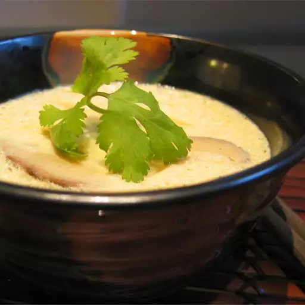

Home
Lasagna
Steamed Fish
Steamed Egg

Ingredients
- 2 eggs
- 1 cup cooled chicken or fish stock
- 1 dash sake
- ½ teaspoon soy sauce
- 2 sprigs fresh parsley, for garnish
Steps
- In a medium bowl, whisk eggs gently while slowly pouring in the chicken stock, sake, and soy sauce. Divide the mushroom and chicken evenly between two small tea cups. Pour the egg mixture into each cup until filled.
- Bring about 1 inch of water to a boil in a steamer or saucepan. Reduce heat to a simmer, and place cups into the steamer. Cover, and steam for 12 minutes, or until egg is firm but soft and silky like tofu. Garnish each cup with a sprig of parsley, and serve.